TRANSPARÊNCIA
O Refy é open source (licença MIT) e este texto é opinião minha sobre uma ferramenta que usei. Nenhum link aqui é de indicação. O Confere foi construído com a ajuda de um agente de IA (Kiro) a partir de um briefing que escrevi, e as medições citadas vêm do repositório e do build daquele projeto, feitas em 11 de novembro de 2026. O repositório do Confere é privado.
RESUMO EM 5 LINHAS
- O Confere (conciliação de cobranças e recebimentos por CSV) foi do primeiro commit ao domínio próprio, com login e banco na nuvem, em cerca de 21 horas de relógio.
- A interface usa 15 componentes do Refy, em 107 usos no código, sem nenhuma outra biblioteca de UI.
- O visual Terracota, com modo claro e escuro, vive em um arquivo JSON de 2,9 KB. Trocar o tema não mexeu em componente nenhum.
- O catálogo é lido pelo agente via MCP e CLI, e o
refy_validatefechou o projeto com zero achados. - O que pesa contra: busca do CLI literal demais, documentação com números desencontrados e um CSS próprio de 1.189 linhas que eu escrevi para a landing.
1. O que eu precisava construir
Toda empresa que cobra e recebe acaba com duas planilhas que deveriam bater e não batem.
O Confere resolve esse caso estreito. Você importa o CSV de cobranças e o de recebimentos, o sistema cruza os dois por identificador único e valor exato, e a tela mostra só as diferenças: cobrança sem recebimento, recebimento sem cobrança, valor divergente, identificador repetido. Cada divergência tem responsável, comentário, justificativa e histórico. Não há aproximação escondida; a regra de casamento está escrita na tela.
Era um bom teste para uma biblioteca de interface, porque o produto é quase todo tabela, filtro, status e aviso. Se o design system não aguenta isso, não aguenta nada do dia a dia de um sistema interno. O resultado está em meuconfere.com.br (abre em nova aba).
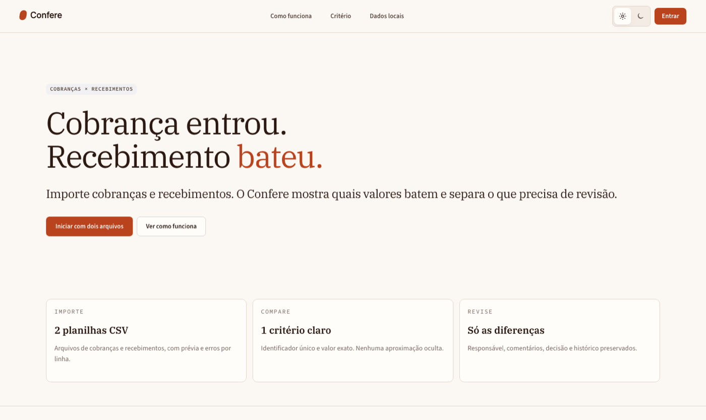
10/11 14:46 → 11/11 12:09
107 USOS NO CÓDIGO
CLARO E ESCURO
NA VERSÃO 1.3.0
2. Por que o Refy e o que ele entrega
Escolhi o Refy Design (abre em nova aba) por três coisas que li no site antes de instalar: o catálogo é organizado por camada (átomos, moléculas, organismos), o tema é um arquivo e existe um caminho feito para agentes de IA. As três se confirmaram na prática. O site anuncia 122 famílias de componentes, 26 templates e um pacote separado para celular, tudo em React e TypeScript.
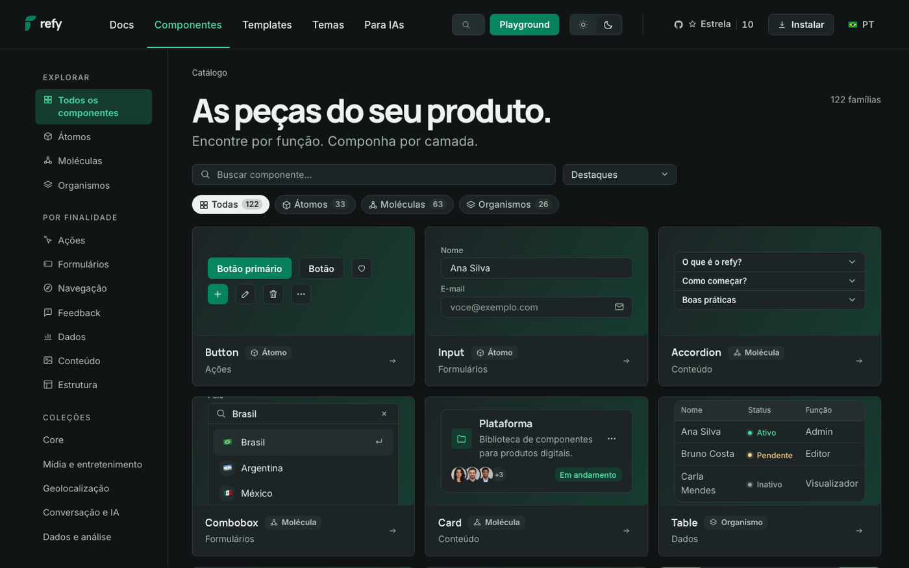
O filtro por finalidade (ações, formulários, navegação, feedback, dados, conteúdo, estrutura)
economiza tempo de um jeito que não aparece em benchmark: eu abro o catálogo com uma necessidade
na cabeça, como “preciso avisar que isto é demonstração”, e a resposta é
Callout. No Confere esse componente apareceu 18 vezes.
O que realmente usei
Contei as ocorrências de cada componente no código-fonte do app. Quatro deles carregam quase tudo, e isso me pareceu saudável: uma interface densa não precisa de cem peças, precisa de poucas bem resolvidas.
Componentes do Refy no Confere
USOS EM JSX NO CÓDIGO · 107 NO TOTAL · 15 COMPONENTES DISTINTOS
ButtonCardCalloutBadgeTablePageHeaderInputEmptyStateSpinnerAppShellThemeProviderLocaleProviderSegmentedSkeletonAlertDialog
contagem de tags <Componente em src/, em 11/11/2026 · v1.3.0
AppShell, ThemeProvider, LocaleProvider e AlertDialog aparecem uma vez porque são montados uma vez
3. O briefing como contrato com a IA
A parte que mais mudou meu jeito de trabalhar foi o trecho de IA. O pacote web do Refy traz um
servidor MCP e uma CLI (refy-agent), e a documentação diz o propósito sem rodeio: o
agente acha o componente pela necessidade, lê a API, confere o código e gera o tema sem sair da
conversa.
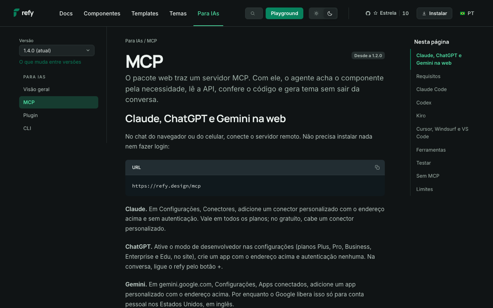
Aproveitei isso no briefing que dei ao agente. Escrevi como contrato: consultar
refy_search e refy_component antes de cada família de controles, nunca
inventar nome de componente ou propriedade, usar tokens do Refy para cor, tipografia e espaço,
proibir uma segunda biblioteca de UI e rodar refy_validate ao longo do trabalho.
O desenho do fluxo ficou assim:
o servidor MCP respondeu em stdio com as ferramentas refy_search, refy_theme_generate e refy_theme_validate · versão 1.3.0
O ganho concreto: o código saiu sem componente fantasma. Em projetos com IA, o erro clássico é
importar de um pacote um nome que parece existir. Aqui o catálogo é a fonte da verdade e a
validação estática barra o resto. Uma ressalva que o próprio Refy escreve na saída do
refy-agent check: a checagem é estática, cobre os arquivos selecionados e não substitui
typecheck, teste no navegador nem revisão humana. Eu fiz os três.
4. Um arquivo de tema, o app inteiro muda
A primeira versão do Confere saiu com o tema padrão do Refy, verde. Funcionava, mas eu queria outra cara: um visual editorial, quente, de “papel e tinta”. O pacote já inclui um tema chamado Terracota, e o próprio site mostra os quatro (Refy, Fluido, Terracota e Cobalto) num seletor do Playground.
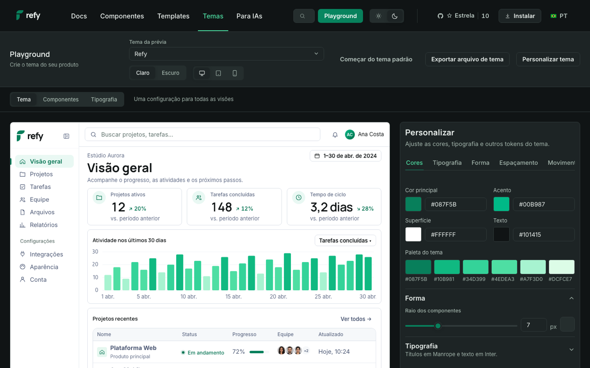
Inspirado nesse ponto de partida, o Confere ganhou um tema próprio, o confere.theme.json, com
tokens para fonte, raio, altura de botão e campo, e duas paletas, clara e escura. Foi a única
coisa que mudei para sair do verde. Os componentes continuaram os mesmos:
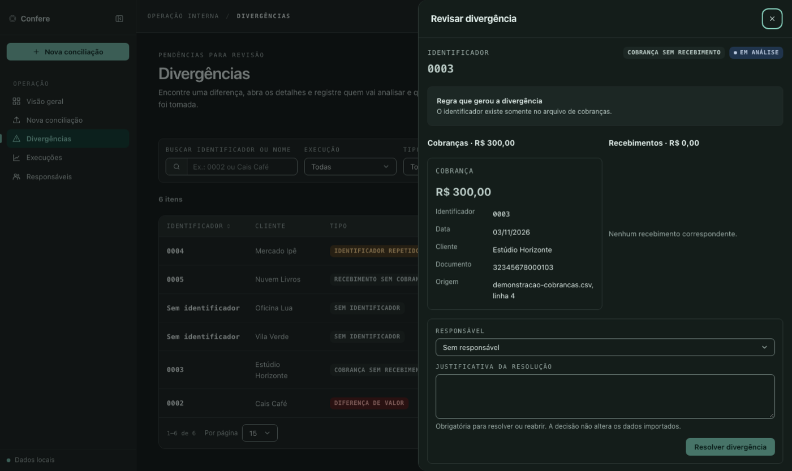
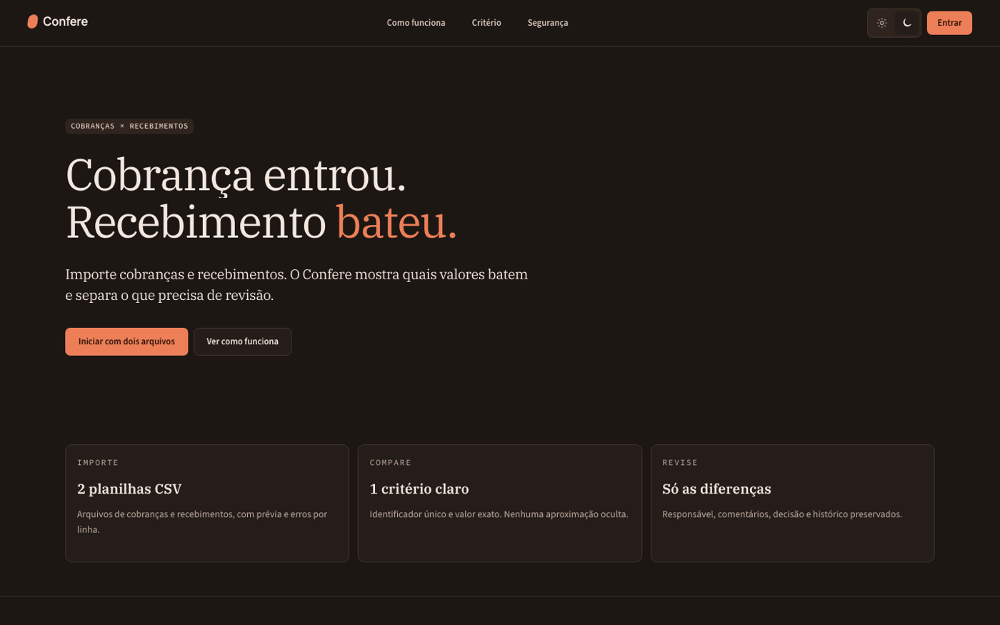
Do lado de dentro, o arquivo é legível por quem não é de front-end. Este é um trecho real, com o que define a cor de destaque nos dois modos:
// src/confere.theme.json (trecho) { "name": "confere-terracota", "tokens": { "--font-heading": "\"IBM Plex Serif\", Georgia, serif", "--font-body": "\"Source Sans 3\", system-ui, sans-serif", "--radius-default": "7px" }, "modes": { "light": { "--bg": "#fbf7f2", "--primary": "#b9431d" }, "dark": { "--bg": "#1d1714", "--primary": "#ed7f58" } } }
MODO CLARO
Recebimento bateu.
MODO ESCURO
Recebimento bateu.
valores lidos de src/confere.theme.json · o claro e o escuro compartilham fontes e formas e trocam só as cores
O interruptor claro e escuro do app é um Segmented do próprio Refy dentro do
ThemeProvider, e a escolha fica salva no navegador. A primeira visita segue a
preferência do sistema. Isso me poupou escrever o que normalmente vira uma semana de bug de
contraste: o MCP tem uma ferramenta que valida o tema, e o Terracota passou no teste de contraste.
5. As telas, de perto
A aplicação em si é um AppShell com menu lateral recolhível, um
PageHeader por tela e cartões de indicador. A informação mais importante da visão
geral é o quanto ainda está em revisão, e o desenho coloca esse número ao lado de quem ele
explica.
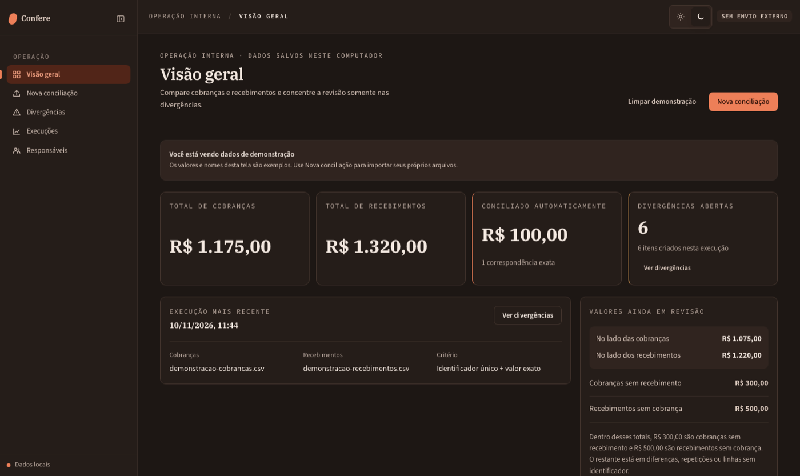
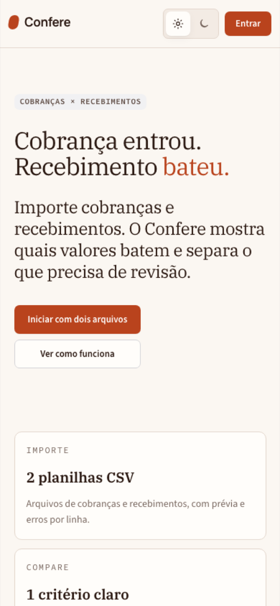
Duas decisões de produto que o catálogo facilitou. Primeiro, o aviso de “você está vendo dados
de demonstração” é um Callout fixo no alto, em vez de um rodapé que ninguém lê. Segundo,
os estados vazios e de carregamento (EmptyState, Skeleton,
Spinner) vêm prontos no Refy, e deixar de usá-los seria preguiça minha.
Movimento com os tokens do próprio sistema
Na landing, o título entra palavra por palavra. A animação usa as variáveis de movimento do Refy
(--motion-page-duration, --motion-feedback-duration e
--motion-ease-enter), então o ritmo acompanha o resto do sistema, e quem pede
“reduzir movimento” no sistema operacional vê o texto parado, inteiro, já na tela.
Os três quadros abaixo foram capturados no início, no meio e no fim da entrada:
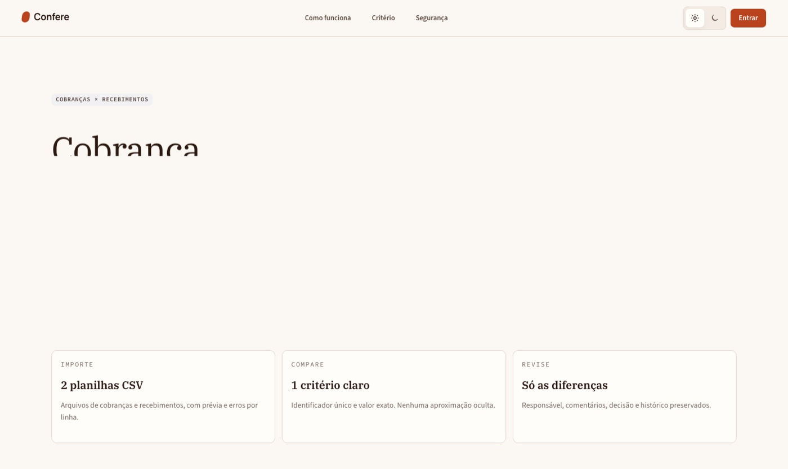
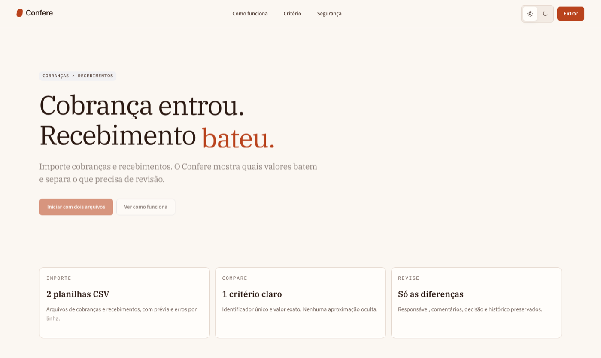
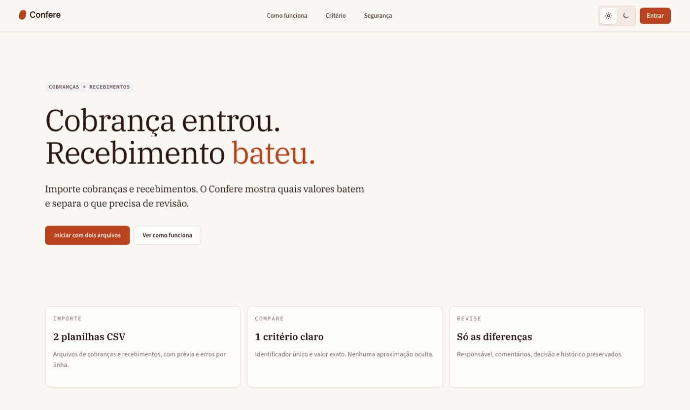
capturas reais do navegador, em momentos diferentes da animação de entrada do título e dos botões
O crédito no rodapé
Coloquei no rodapé da landing “Criado por Leandro Pereira” e “Design criado com Refy”, com link para o site da biblioteca. Prefiro dar crédito a quem me poupou trabalho, e é o único lugar do produto onde isso cabe sem atrapalhar.
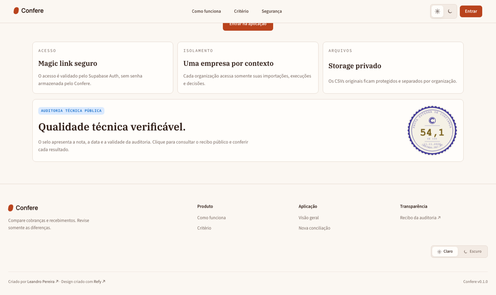
6. O relógio da construção
Os horários abaixo vêm do histórico do repositório (hora do commit, fuso de Brasília). Só o trecho da interface é Refy. O resto é banco, autenticação e infraestrutura, que levaram a maior parte do tempo, como costuma acontecer.
- Primeiro commit e v0 funcionalImportação, motor de conciliação, fila de divergências e exportação, com interface Refy desde o início.
- Base multiempresa e CIDocker e verificação automática de testes, build e Refy a cada alteração.
- Login por magic linkAutenticação com Supabase e isolamento entre organizações.
- PostgreSQL e arquivos na nuvemCSVs originais em bucket privado.
- Deploy no RenderServiço no ar. O domínio meuconfere.com.br e o login real foram validados na sequência, por volta das 12h.
- Ajustes pós-lançamentoMenu recolhido sem espremer o texto, versão automática no rodapé, créditos.
- Auditoria pública e animação do títuloLanding legível sem JavaScript, metadados e movimento com os tokens do Refy.
7. O que pesa e o que não resolve
Gosto de texto técnico que mostra a conta inteira. Medi o build de produção do Confere:
Peso do build, comprimido com gzip
KB · BUILD DE PRODUÇÃO DO CONFERE · INCLUI REACT, ROTEADOR E CÓDIGO DO APP
JavaScriptCSSdois arquivos JS (126 KB + 58 KB) e um CSS · o número não isola o Refy do resto · as fontes tipográficas ficam fora da conta
Esse peso é aceitável para um app de trabalho que se abre uma vez por dia, e eu não o chamaria de
leve. Se o seu caso é uma landing que precisa carregar em 3G, meça antes. Também vale um aviso
sobre mim: o styles.css do Confere tem 1.189 linhas. A maior parte é da landing
editorial, que eu desenhei com liberdade em cima dos tokens. O Refy não me obrigou a escrever
isso, e quem quiser ficar só com os templates do catálogo escreve bem menos.
Os incômodos que encontrei
Antes do Confere eu avaliei a versão 1.2.0 do Refy e abri issues no repositório. Nada do que achei impede o uso, e quase tudo diz respeito à camada de IA e à documentação:
- Busca do CLI literal demais. Na 1.2.0,
refy-agent catalogcom “tabela” ou “login” devolvia zero resultados, enquanto orefy_searchdo MCP achava. Se for usar a CLI, busque pelo nome do componente em vez da necessidade. - Ranking do MCP pode colocar na frente um componente cuja descrição só menciona o termo para negá-lo.
- Documentação com números desencontrados entre README e site (famílias, pacote mobile, nomes antigos nas URLs).
- Versão. O site já mostra a 1.4.0 como atual. O Confere está fixado na 1.3.0 e eu não retestei esses pontos na versão nova.
Nenhum desses itens me fez trocar de biblioteca. Para mim o sinal que importa é outro: são problemas de projeto jovem e bem mantido, que se resolvem com issue, e não de arquitetura.
8. Veredito e por onde começar
Usaria de novo amanhã, e para qualquer sistema interno com tabela, fila e formulário eu começaria por ele.
O ponto forte não está em um componente isolado. Está na combinação de catálogo organizado, tema em arquivo e um caminho oficial para a IA consultar tudo isso, porque os três juntos tiram do projeto a parte mais cara: decidir e revisar milhares de pequenas escolhas visuais. Ainda não fiz com ele um painel de gráficos, e o template de análise do catálogo é o primeiro que pretendo testar para isso.
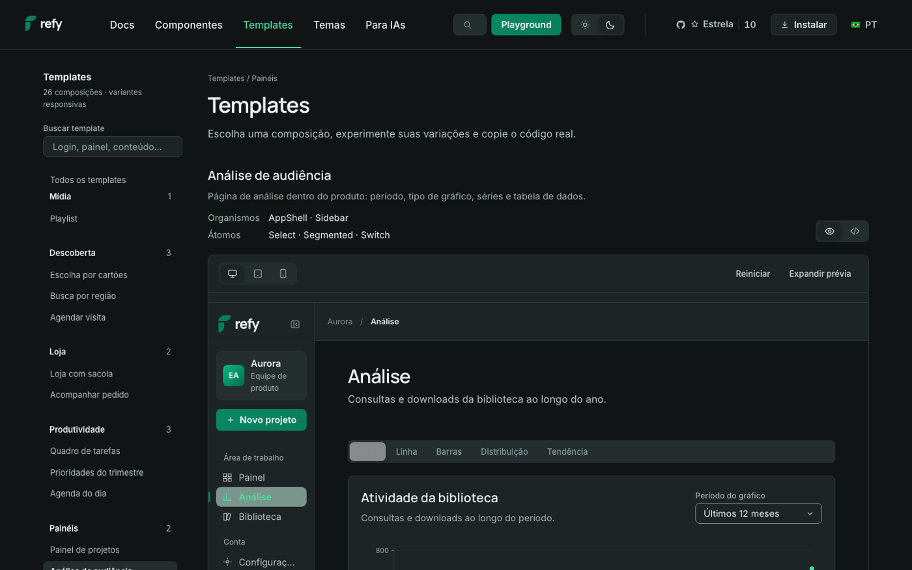
Para reproduzir o começo, os comandos que usei estão no package.json do Confere:
# instala a versão exata npm install @refy-design/web@1.3.0 # acha e lê a API de um componente npx refy-agent catalog npx refy-agent component Callout # valida os arquivos da interface npx refy-agent check src
o MCP é configurado no cliente de IA seguindo a página oficial (abre em nova aba) · use a mesma versão no pacote e no servidor
Perguntas frequentes
O Refy Design é gratuito?
Sim. É uma biblioteca React e TypeScript open source sob licença MIT, com 122 famílias de componentes, 26 templates e um pacote separado para celular. Não paguei nada para construir o Confere com ele.
Dá para usar o Refy Design com assistentes de IA?
Dá. O pacote web traz um servidor MCP e uma CLI chamada refy-agent. Com eles o agente procura o componente pela necessidade, lê a API real, confere o código e gera o tema. A documentação lista a configuração para Claude, ChatGPT, Gemini, Kiro, Cursor, Windsurf e VS Code.
Como trocar o visual sem reescrever componentes?
Pelo arquivo de tema. Um JSON define cor, fonte, forma, espaço e movimento, nos modos claro e escuro. O pacote já inclui os temas Refy, Fluido, Terracota e Cobalto. No Confere, o tema próprio tem 2,9 KB.
O Refy serve para aplicações densas, com tabelas e filas de revisão?
Serviu para o Confere, que é uma fila de divergências com tabela, filtros, badges de status e avisos. Ainda não construí um painel de gráficos com ele, então sobre essa parte não tenho medição própria.
Quanto o Refy pesa no build de produção?
No build do Confere, os dois arquivos JavaScript somam cerca de 184 KB com gzip e o CSS tem cerca de 26 KB. A conta inclui React, o roteador e o código do app, e não isola o Refy.
SOBRE O AUTOR
Leandro Borges Pereira
Engenheiro de dados e fundador da LBP Tecnologia, consultoria de São Paulo que constrói plataformas de dados na AWS, painéis auditáveis e sistemas web para empresas. Escreve sobre o que dá para verificar, na linha da tese da casa: prova, não promessa.